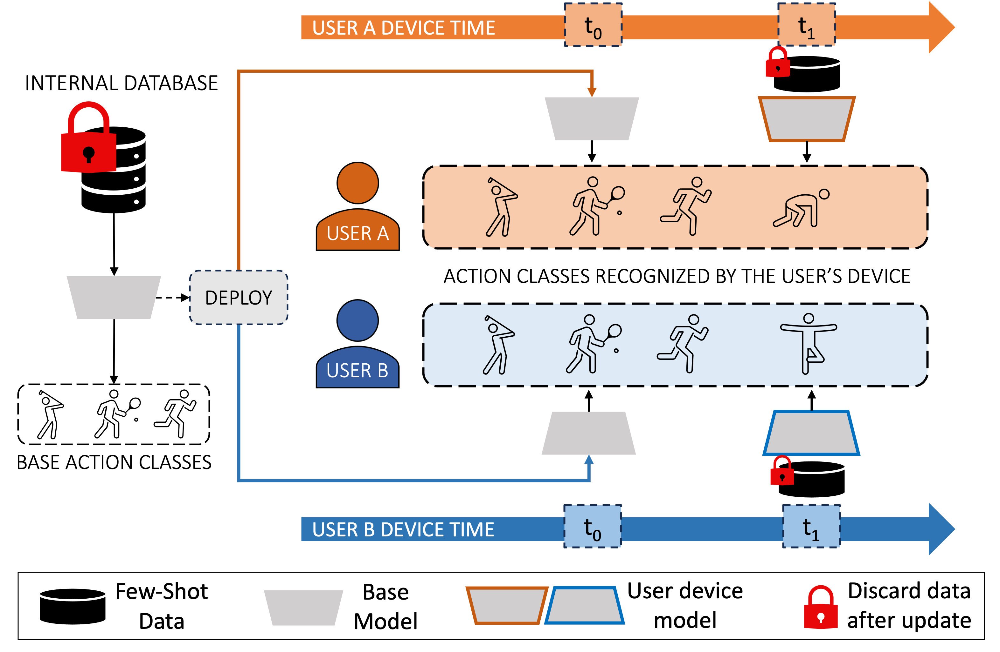
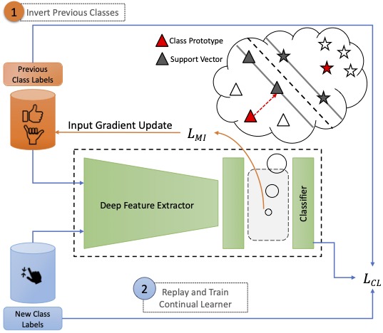

Hi! I'm pursuing my Masters in Robotics at Carnegie Mellon University, where I am advised by Prof. Fernando De La Torre. I am interested in creating dynamic visual learning systems that continuously adapt and generalise to unseen concepts, particularly from a life-long and low-shot learning perspective.
Previously, I spent two wonderful years working as a Research Fellow with Prof. C V Jawahar, and jointly co-advised by Prof. Vineeth N Balasubramanian, Prof. Chetan Arora and Dr. Anbumani Subramanian, working on Continual Semantic Segmentation for Autonomous Driving. In summer 2019, an opportunity to conduct research with Prof. Frederic Jurie in beautiful Normandy (France) made me want to pursue research long term!
Recent Publications
|

|
Continual Few-Shot Learning of New Actions With Prompt TuningUnder Review, 2024 Continual personalisation without forgetting of human action and hand gesture recognition. We enable users in a XR device to add new classes in a few-shot continual manner, while preserving user privacy. We show that prompt tuning of lightweight non-transformer backbones (such as GCNs) can be used to solve this problem! |
|

|
Data-Free Class-Incremental Hand Gesture RecognitionICCV 2023 |
|
|
Multi-Domain Incremental Learning for Semantic SegmentationWACV 2022 |
Selected Research Projects

|
Towards an AI Infused System for Objectionable Content Detection in OTTWith the substantial increase in the consumption of OTT content in recent years, personalized objectionable content detection and filtering has become pertinent for making movie and TV series content suitable for family or children viewing. We propose an objectionable content detection framework which leverages multiple modalities like (i) videos, (ii) subtitle text and (iii) audio to detect (a) violence, (b) explicit NSFW content, and (c) offensive speech in videos. |

|
Memorization and Generalization in CNNs using Soft Gating MechanismsTechnical Report / Code / Technical Report, Suboptimal ResNet Gating Mechanisms A deep neural network learns patterns to hypothesize a large subset of samples that lie in-distribution and it memorises any out-of-distribution samples. While fitting to noise, the generalisation error increases and the DNN performs poorly on test set. In this work, we aim to examine if dedicating different layers to the generalizable and memorizable samples in a DNN could simplify the decision boundary learnt by the network and lead to improved generalization in DNNs. While the initial layers that are common to all examples tend to learn general patterns, we dedicate certain deeper additional layers in the network to memorise the out-of-distribution examples. |
Forked and modified from Viraj Prabhu's adaptation of Pixyll theme